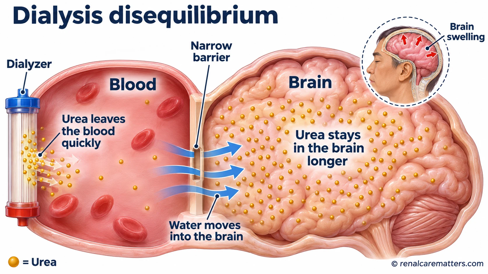
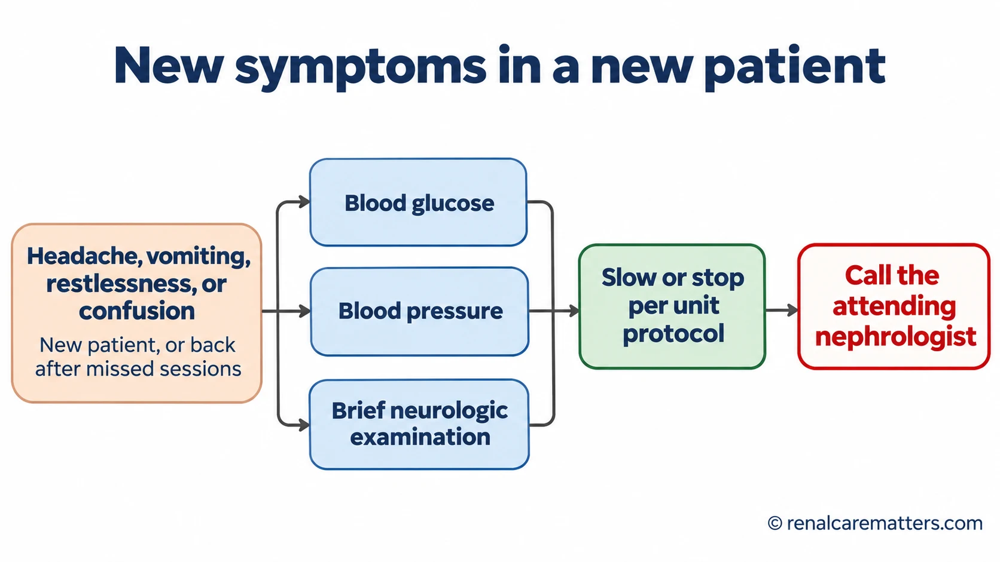
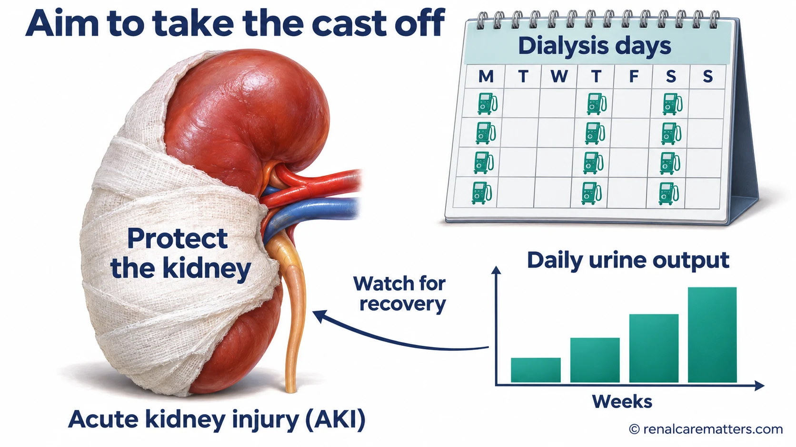
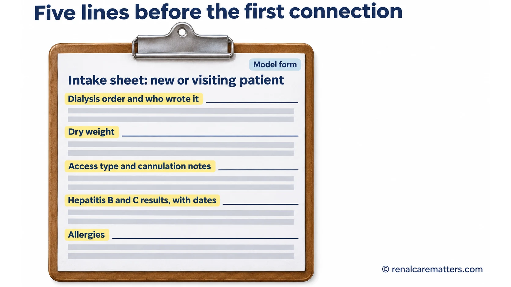
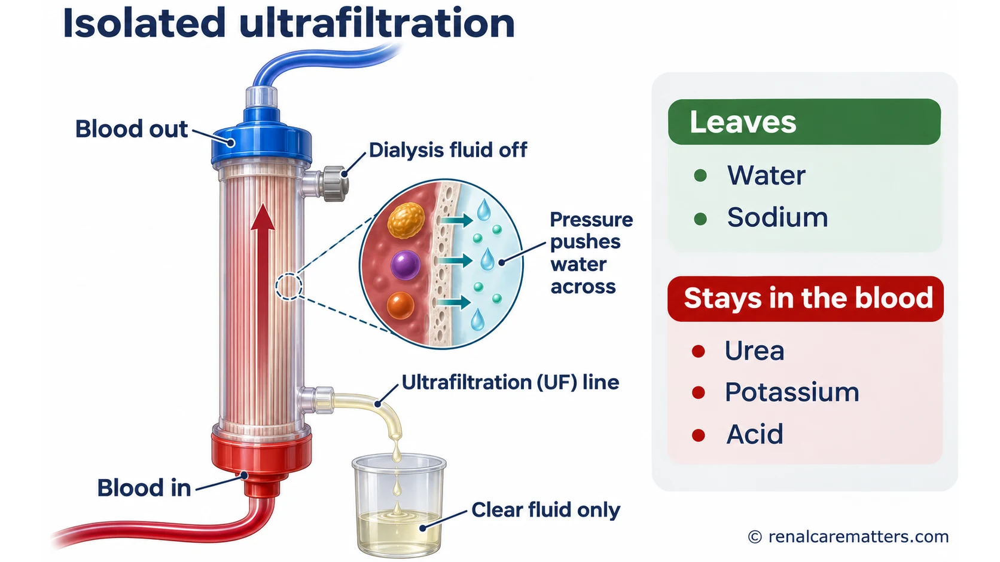

The first dialysis, disequilibrium, the patient with acute kidney injury, the visiting patient, and isolated ultrafiltration.
PublishedNailathalaGipatikPepalwal:ReferencesMga SanggunianMga TinubdanReng Reperensya:19Audience: Physicians who cover hemodialysis shifts · attending nephrologists, medical directors, and head nurses who orient themRead timeOras ng pagbasaOras sa pagbasaOras ning pamamasa:
This module is study material for physicians on duty in hemodialysis units. It explains the reasoning behind common decisions; it is not a protocol. At the chairside, follow your unit’s protocol and ask the attending nephrologist for guidance. Doses and cut-off values are set by your unit. Every case is fictional.
Learning objectives
After this module you should be able to
Explain why the first sessions are short and gentle, using the physics of urea removal and the high death rate of new dialysis patients.
Explain how dialysis disequilibrium develops, name who is at risk, and recognize its early signs at the chair.
Apply different goals and cautions to a patient with acute kidney injury on outpatient dialysis, whose aim is recovery.
Receive a visiting or newly transferred patient safely by verifying identity, order, access, serology, and records before the first connection.
Explain what isolated ultrafiltration removes and what it leaves behind, and when the attending nephrologist may choose it.
Pre-testBefore you read, answer the 8 self-assessment questions and note your score. After the module, select New set of questions and compare. The difference is what you learned; the questions you still miss are what to reread.
Start here
The big picture, in plain words
In plain wordsThink of the first long drive in a new car. You do not know how it brakes, how it corners, or how the engine behaves on a hill. So you drive slowly at first and learn its handling before you go faster. A first dialysis session is driven the same way.
The picture has a limit. A new car is the same car on day one and day thirty. A new dialysis patient is not. The body has adapted to weeks of high urea and acid, and dialysis changes that chemistry within hours. The risk lies in the speed of change, so the first sessions are deliberately less efficient.
Figure 1 · Key terms for this module
First-ever sessionThe first hemodialysis treatment of a patient’s life, usually through a new catheter.
Dialysis disequilibrium syndrome (DDS)Brain swelling and neurologic symptoms during or soon after dialysis, caused by a fast fall in plasma urea and other solutes.
OsmolalityThe concentration of dissolved particles in a fluid. Water moves toward the side with more particles.
Urea reduction ratio (URR)The percentage fall in blood urea during one session.
Acute kidney injury (AKI)A sudden loss of kidney function over hours to days, which may recover.
Transient patientA patient who dialyzes in your unit for a short time while away from the home unit.
Isolated ultrafiltration (isolated ultrafiltration (UF))Removal of plasma water by pressure alone, with no dialysis fluid flowing.
Most sessions are routine because the patient, the access, and the order have been tested many times. A few sessions remove that safety margin: a first dialysis, a patient still recovering from acute kidney injury, a visitor from another unit, and a session that removes only water. Your work is to recognize these sessions before connection, to check the order as if you had to defend each line, and to call the attending nephrologist early.
Opening case · fictional
Case: New patient, urea of 250
Wednesday, 1:00 p.m. Mrs. Erlinda “Linda” Bautista, 64, arrives from a provincial hospital after three weeks of vomiting and poor appetite. She has never seen a nephrologist. A non-tunneled catheter was placed in her right internal jugular vein this morning. The nurse, Mr. Paolo Cruz, shows you a handwritten order relayed by phone: “hemodialysis (HD) 4 hours, blood flow as tolerated, UF 2 L.”
Her results from this morning: blood urea nitrogen (BUN) 250 mg/dL, creatinine 15.8 mg/dL, sodium 132 mmol/L, potassium 5.9 mmol/L, bicarbonate 12 mmol/L, and glucose 110 mg/dL. Her blood pressure is 172/96 mm Hg, pulse 96 per minute, and oxygen saturation 96%. She weighs 52 kilograms. She is drowsy but answers questions, and she has asterixis, a flapping tremor of the outstretched hands. Her hepatitis B and C results are “pending.” All values are illustrative.
Before reading on, decide:
How high is her risk of disequilibrium, and why?
What in the order and the unit protocol must you check before connection, and what do you tell the attending nephrologist?
Where does she dialyze today while her serology is pending?
Keep your answers in mind. The lesson gives you what you need, and the case review near the end shows one sound response.
Lesson · part 1
Why the first sessions are different
A maintenance patient brings a known body to the chair. The access has been used many times. The dry weight has been tested. A new patient brings none of this.
What the new patient brings
The new patient usually arrives with the highest urea of their dialysis life, because the kidneys have failed slowly and no one has cleared the waste. Acid has built up for the same reason, so the bicarbonate is often low. The access is often a catheter placed hours earlier. The response of the blood pressure to fluid removal is unknown. Many new patients still make urine, and that leftover function protects them. Module 3 explained why. In a large cohort of patients starting hemodialysis, a faster loss of this residual kidney function was associated with higher mortality.1 The study was observational, so sicker patients may have lost function faster for other reasons.
The first months carry the highest risk
Robinson and colleagues followed 86,886 patients in 11 countries in the Dialysis Outcomes and Practice Patterns Study (DOPPS). In the first 120 days of hemodialysis, there were 26.7 deaths per 100 patient-years. From day 121 to day 365 there were 16.9, and after the first year there were 13.7. In every country, mortality was higher in the early period than in the intermediate period.2
This is an observational finding. Part of the early excess reflects the patients themselves: many start dialysis unplanned, sick, and through a catheter. The study does not show that gentler first sessions lower this death rate. It does show that the transition period deserves your closest attention.
What you do
Treat every first-ever session as a session in which you call the attending nephrologist before connection. Confirm that the order was written for a first session, as Module 7 describes. Confirm that the access is usable (Modules 9 and 10). Confirm the serology plan (section 5). Module 11 gave you the safe-to-start assessment; for a new patient, add a baseline neurologic check.
Figure 2 · The first three sessions, stepwise
Check the orderConfirm the attending nephrologist wrote or approved it for a first session. Every setting is per the attending’s order.
Gentle first sessionShorter and less efficient than a maintenance session, as the attending prescribes. Watch for headache, nausea, and restlessness.
ReassessBefore the next session, review symptoms, pressure, weight, urine output, and the post-dialysis results.
Step upThe attending nephrologist raises time, blood flow, or dialyzer size over the following sessions, toward the maintenance prescription.
RememberA first session is never routine. Read the order as if you had to defend each line.
Lesson · part 2
Dialysis disequilibrium: what happens in the brain
Picture two rooms joined by a narrow door. The blood is one room, and the dialyzer drains its dissolved particles quickly. The brain is the other room, and its particles can leave only through the narrow door. For a while, the brain room holds more particles than the blood room. Water moves toward the side with more particles, so water moves into the brain.

Figure 3. Dialysis disequilibrium. Urea leaves the blood faster than it leaves the brain. For a while the brain holds more dissolved particles than the blood, and water moves into it.
The picture has a limit. Urea is not the only actor, and the door is not the only reason the brain lags. Researchers have proposed three mechanisms, and they may act together.
Normal physiology first
Osmolality is the concentration of dissolved particles in a fluid. Water crosses cell membranes freely and moves toward the side with higher osmolality. Sodium and glucose stay mostly outside cells, so they pull water strongly. Urea crosses most cell membranes, so in a steady state it is an “ineffective” osmole: it is equal on both sides and pulls no water.3 Urea becomes effective when its plasma level falls faster than it can leave the cells. Brain cells, behind the blood-brain barrier, are the slowest to equalize.
What breaks: three proposed mechanisms
Figure 4 · Three proposed mechanisms
Reverse urea effectDialysis removes urea from the blood faster than from the brain. The brain is left relatively hyperosmolar, and water enters it.
Idiogenic osmolesBrain cells adapt to a long hyperosmolar state by making their own particles. These do not leave quickly when plasma osmolality falls, so they hold water in the brain.
Brain acidosisFast correction of systemic acidosis may lower the pH of the cerebrospinal fluid, which may add to brain swelling.
Sahani and colleagues described all three.4 Silver, Sterns, and Halperin critically reviewed the experimental work. They concluded that the reverse urea hypothesis remains a viable explanation, and that rapid reduction of a high urea level by itself predisposes to the condition.5 A high starting urea, removed quickly, leaves the brain relatively hyperosmolar. Water enters, the brain swells, and the pressure inside the skull rises. Symptoms follow, from headache to seizures.6,7
Worked example A: urea’s share of osmolality (illustrative numbers). Calculated osmolality (mOsm/kg) = 2 × sodium + glucose ÷ 18 + BUN ÷ 2.8, with glucose and BUN in mg/dL.3 Linda, before dialysis: 2 × 132 + 110 ÷ 18 + 250 ÷ 2.8 = 264 + 6.1 + 89.3 = 359.4 mOsm/kg. Urea contributes 89.3. If one session achieved a URR of 65%: post-BUN = 250 × 0.35 = 87.5 mg/dL. Urea now contributes 87.5 ÷ 2.8 = 31.3. The urea share falls by 58.0 mOsm/kg. If the session achieved a URR of 30%: post-BUN = 250 × 0.70 = 175 mg/dL. Urea contributes 62.5. The urea share falls by 26.8 mOsm/kg. What it tells you: the osmotic shift grows with the starting urea and with the fraction removed in one session. What it does not tell you: no validated “safe” fall exists, and sodium and glucose also change during dialysis. The target URR for a first session is the attending nephrologist’s decision.
The site’s osmolal gap calculator uses the same three terms.
Illustrative scenario for Linda
BUN (mg/dL)
Urea share (mOsm/kg)
Calculated osmolality, sodium and glucose held constant
Before dialysis
250
89.3
359.4
After a session with a URR of 30%
175
62.5
332.6
After a session with a URR of 65%
87.5
31.3
301.4
Who is at risk
Risk is highest in a first-ever session, with a very high pre-dialysis urea, with severe acidosis, in a patient returning after several missed sessions, and in a patient with existing brain disease such as a recent stroke, head injury, or seizure disorder. It is also described in AKI and with continuous therapies.8,9,6 These risk factors come from reviews and case reports, not from studies that measured risk.
What the evidence can and cannot tell you
Mistry described the condition as a diagnosis of exclusion that is uncommon and becoming rarer. Because it is rare, randomized trials of prevention are almost impossible.8 Raina and colleagues reviewed 49 reports with 321 patients, with a pediatric focus. Among 226 patients with the syndrome, nausea occurred in 25.2%, headache in 24.8%, vomiting in 23.9%, muscle cramps in 18.1%, reduced consciousness in 8.8%, confusion in 4.4%, and seizure in 4.9%. Reports clustered in the early dialysis era.9 These are case series. They describe what the syndrome looks like, not how often it occurs or which prevention works best.
RememberDisequilibrium is caused by cleaning too much too fast in a body that has adapted to high urea. The prevention is in the prescription.
Lesson · part 3
Preventing and recognizing disequilibrium at the chair
Think of lowering a heavy load with a rope. If you let go, it falls hard. If you lower it in stages, it lands safely. The first sessions lower the urea in stages.
Prevention belongs to the order
The attending nephrologist prevents disequilibrium through the prescription. The usual approach lowers the efficiency of the first sessions and adds sessions instead. Sahani and colleagues described shortening the first run to 25% to 30% of a normal session, lowering the blood flow or the dialysis fluid flow, or using a less efficient dialyzer, with dialysis frequency increased instead. A second strategy raises plasma osmolality by adding solutes to the blood.4 These are strategies described in a review, not tested targets. Any number for your patient is the attending nephrologist’s to set.
Your part is to check that the order fits the patient. An order that would suit a stable maintenance patient, such as four hours with blood flow “as tolerated,” does not fit a first session with a BUN of 250. When the order and the patient do not match, you do not change the order. You call.
Worked example B: reading the first-session URR (illustrative numbers). URR (%) = (pre-BUN − post-BUN) ÷ pre-BUN × 100.10 Pre-BUN 250 mg/dL, post-BUN 180 mg/dL: (250 − 180) ÷ 250 × 100 = 70 ÷ 250 × 100 = 28%. What it tells you: the first session lowered urea by about a quarter, which is often what the attending intended. What it does not tell you: that the dose is inadequate. A low URR is expected in a deliberately gentle first session, and the maintenance targets in Module 7 do not apply to it. The site’s Kt/V calculator computes the same ratio.
Recognition
Early signs are headache, nausea, vomiting, restlessness, blurred vision, and muscle cramps. Late signs are confusion, seizures, and reduced consciousness.6,7 Symptoms can begin during the session or shortly after it. Zepeda-Orozco and Quigley noted that treatment once the syndrome is established is rarely successful, so early recognition matters most.7
Onset in a first session or after missed sessions, often in the later part of the run or soon after
A dialyzer reaction usually starts in the first minutes. A low pressure follows fluid removal
Disequilibrium is a diagnosis of exclusion.8 A headache in a new patient may also come from high pressure, low sugar, or bleeding inside the skull, which matters more in a patient who received heparin. Your first job is to rule out the causes you can check in minutes.

Figure 5. New symptoms in a new patient. Check glucose, pressure, and the nervous system; slow or stop per your unit’s protocol; and call the attending nephrologist at once.
What you do
Figure 6 · New symptoms in a new patient
Go to the chairLook at the patient. Check that the patient responds, breathes comfortably, and has a pulse.
Slow or stopAsk the nurse to slow or stop the treatment as your unit’s protocol allows.
Check the quick causesBlood glucose, blood pressure, pulse, and a brief neurologic examination: orientation, pupils, limb movement, speech.
Protect the patientTurn a vomiting patient to the side. Keep the chair low and the side rails up. Seizure care follows Module 18.
CallCall the attending nephrologist at once. Report the time into the session, the blood flow, the symptoms, and your findings.
RecordWrite the time of onset, the findings, each step, and the advice received.
Hemodialysis emergency reviews describe the same sequence: recognize early, slow or stop, exclude other causes, and treat seizures if they occur.11,12 The evidence for each step rests on mechanism and case experience, not on trials.
Stop and callStop and call the attending nephrologist when headache, vomiting, restlessness, blurred vision, or confusion appears in a new patient or in one returning after missed sessions. Slow or stop the treatment per your unit’s protocol while you call.
RememberIn a new patient, a headache is disequilibrium until you have checked the pressure, the sugar, and the nervous system and called the attending.
Lesson · part 4
The patient with acute kidney injury: a different goal
A cast on a broken leg is not meant to stay. You put it on so the bone can heal, and you check each week whether it can come off. Dialysis for acute kidney injury (AKI) works the same way.

Figure 7. Acute kidney injury (AKI) treated with dialysis. The goal is to take the cast off: protect the kidney and measure it every week for signs of recovery.
The picture has a limit. A bone heals on a predictable schedule, and a kidney does not. Some kidneys recover in two weeks, some in three months, and some never. The only way to know is to measure.
Physiology: what can deepen the injury
An injured kidney may recover over weeks as its tubular cells regenerate. During that time it is sensitive to low blood flow. A fall in blood pressure during dialysis reduces kidney perfusion and may set recovery back. Nephrotoxic medicines, such as nonsteroidal anti-inflammatory drugs and aminoglycosides, and iodinated contrast add further injury. Removing too much fluid has the same effect.
Evidence: how many recover, and when
Jordan and colleagues followed 111 patients discharged on outpatient hemodialysis after AKI. Forty-five (41%) recovered. Of those who recovered, 55.5% did so within 30 days of discharge, 35.5% between 30 and 60 days, and 9% between 60 and 90 days. Forty-nine (44%) progressed to kidney failure, and 17 (15%) died or went to hospice.13 Gautam and colleagues studied 119 patients: 42.0% became dialysis independent, 48.7% were declared to have kidney failure, and 9.2% died. Heart failure, worse baseline kidney function, and a recent earlier episode of AKI predicted outcome.14
Both studies were single-center and observational, and both selected patients well enough to leave the hospital. Their recovery rates cannot be applied directly to your unit. A 2024 review concluded that about one third of such patients survive and recover enough to stop dialysis, and that data to guide dialysis management for recovery are lacking.15
One small quality-improvement study tested a structured protocol in 9 patients, with weekly recovery assessment and individualized dose and ultrafiltration rate. Adherence to the protocol was 53.8%, and adherence was associated with fewer episodes of intradialytic hypotension. Three of the nine patients were free of dialysis within 90 days.16 The study shows feasibility. It does not show that the protocol improves recovery.
Feature
Patient with AKI
Maintenance patient
Goal
Support the patient until the kidney recovers, then stop
Long-term replacement of kidney function
Fluid removal
Gentle. Avoid low pressure, which may deepen the injury
Reach the dry weight within a safe rate (Module 8)
Urine output
Recorded every session. A rise is news to report
Recorded where residual function is followed
Laboratory tests between sessions
Pre-dialysis creatinine and urea trends, and any timed urine the attending orders
Monthly routine tests per protocol
Medicines
No nephrotoxin or contrast without the attending’s approval
Dosed for kidney failure (Module 20)
Review
The attending nephrologist reviews recovery at a set interval, often weekly
Routine monthly review
What you do
Confirm that the order labels the patient as AKI. Record urine output and weight at every session. Follow the attending’s plan for avoiding low pressure. Do not give or approve any nephrotoxic medicine without the attending’s agreement. Watch for the signs of recovery: rising urine output, and a pre-dialysis creatinine or urea that no longer rises as expected between sessions. Report them the same day. The attending nephrologist decides whether to hold a session, repeat laboratory tests, or order a timed urine collection. The site’s urine output and fluid balance calculator helps you keep the trend in one place.
Worked example C: the recovery watch (illustrative numbers). Mr. Danilo Reyes had AKI after severe leptospirosis and is in week 3 of outpatient dialysis. His urine output rises from 200 to 900 mL per day over two weeks. His pre-dialysis creatinine stops rising between sessions. Sequence: you record the trend, report it to the attending nephrologist, and the attending decides whether to hold a session and repeat tests or to collect a timed urine. Timed creatinine clearance (mL/min) = urine creatinine × urine volume (mL) ÷ (plasma creatinine × collection time in minutes).3 Illustration: urine creatinine 40 mg/dL, volume 900 mL over 24 hours (1,440 minutes), plasma creatinine 5.0 mg/dL. Clearance = 40 × 900 ÷ (5.0 × 1,440) = 36,000 ÷ 7,200 = 5.0 mL/min. What it tells you: the kidney is clearing some creatinine, and the trend matters more than one value. What it does not tell you: an incomplete collection underestimates clearance, creatinine clearance overestimates true filtration, and plasma creatinine is not stable between sessions. The decision to stop dialysis is the attending nephrologist’s.
RememberFor a patient with AKI, every session asks one question: is the kidney coming back? Protect it, and measure it.
Lesson · part 5
The transient or newly transferred patient
A relief pilot who takes over a plane in mid-flight reads the log before touching the controls. Another unit set the prescription, knows the access, and has the records. You take over with only what the patient carries.
What can go wrong
Five errors recur. The prescription is transcribed wrongly. The access is unfamiliar, so needles go in the wrong place or the catheter’s lumens are reversed. A patient with unknown hepatitis status is placed at a general station. The visiting unit used a different dialyzer or dialysis fluid concentrate. An allergy or a code status decision is missing.
Document
Why you need it
Current dialysis order with dry weight
The starting point for the local order the attending nephrologist writes
The last several session records
Usual pressures, weight gains, problems during sessions, and the blood flow actually achieved
Access type, cannulation map, and recent problems
Where to needle, which direction, and what to avoid (Modules 9 and 10)
Recent laboratory results
Potassium, hemoglobin, and urea for safety and comparison
Hepatitis B surface antigen, hepatitis B surface antibody, and hepatitis C antibody, with dates
Station and machine assignment by your unit’s protocol
Medication list and allergies
Heparin allergy or intolerance, and medicines given during dialysis
Vaccination record
Hepatitis B immunity status
Advance directives and code status
What to do if the patient arrests in your unit
Referring nephrologist’s contact details
For questions before and after the session

Figure 8. The five lines on an intake sheet that you check before the first connection: the order, the dry weight, the access, the dated serology, and the allergies.
Serology and isolation
Hepatitis B spreads easily in dialysis units through blood on surfaces and equipment. The Centers for Disease Control and Prevention (CDC) recommends that patients who carry hepatitis B surface antigen dialyze in a separate room with dedicated machines, equipment, and supplies, that staff caring for them not care for susceptible patients at the same time, and that every patient’s status be known on admission.17 Hepatitis C testing and the Kidney Disease: Improving Global Outcomes (KDIGO) position on isolation are covered in Module 29.18 Here the rule is plain. If a result is missing, unknown, or older than your unit accepts, follow your unit’s protocol for unknown status until results are verified.
What you do
Figure 9 · Accepting a visitor or transfer, in order
IdentityConfirm two identifiers and match them to every document.
DocumentsGo through the intake list. Mark each item verified, missing, or out of date.
SerologyPlace the patient by verified status, or by the unit’s rule for unknown status.
Local orderAsk the attending nephrologist to write or approve an order for your unit. The visiting order is information, not an instruction to your staff.
AccessExamine the fistula, graft, or catheter yourself before the first needle or connection.
BaselineRecord weight, pressure, and the safe-to-start assessment from Module 11.
ConnectStart only when the order, the station, and the access are all confirmed.
Worked example D: the visitor intake sort (decision walk-through, illustrative). Mrs. Tess Villanueva, a balikbayan visiting from abroad, brings an order printed by her home unit, a left arm fistula, and hepatitis B and C results dated seven months ago. Verified: identity on two identifiers. The fistula, after your examination finds a good thrill and a mature vessel. Needs the attending nephrologist: the printed order, which must become a local order. Her dry weight, which you compare with today’s weight and examination. Any setting your unit cannot match. Unit protocol for unknown status: her serology, if seven months is older than your unit accepts. She dialyzes where your protocol places patients with unverified status, and fresh samples are drawn as the protocol directs. Before needling: a local order exists, the station is assigned, and the fistula is examined. What the sort tells you: what blocks the first connection. What it does not tell you: whether her home prescription is right for her today. That judgment is the attending’s.
Module 28 covers the documents a patient carries out when traveling, and Module 29 covers serology schedules.
Stop and callStop and call the attending nephrologist before connection when a visiting or transferred patient has no written order, no dry weight, or no verified serology. Do not connect on a referring unit’s order alone unless your unit’s protocol explicitly allows it.
RememberA visitor’s first session in your unit is a first session for your staff. Read the log before you fly.
Lesson · part 6
Isolated ultrafiltration: removing water without dialysis
Wringing a towel removes water without washing it. The water comes out, but the dirt stays. Isolated ultrafiltration does the same to the blood.

Figure 10. Isolated ultrafiltration. With no dialysis fluid flowing, pressure alone pushes plasma water and salt across the membrane. Urea, potassium, and acid stay behind.
The picture has a limit. The water that leaves the blood is not pure. It carries the small solutes dissolved in plasma at about their plasma concentration. So some sodium, urea, and potassium do leave, but only in proportion to the small volume of fluid removed.
Physiology
Module 5 explained diffusion and ultrafiltration. In ordinary hemodialysis both happen together. Dialysis fluid flows past the membrane and pulls solutes out by diffusion, while pressure pushes water out. In isolated ultrafiltration, the dialysis fluid flow is turned off. Pressure alone pushes plasma water across the membrane, a form of convection without diffusion.19
The fluid removed has roughly the composition of plasma water. Sodium leaves with the water, so salt and water are removed together. Urea, potassium, and acid are cleared only in proportion to the volume removed, which is small compared with what diffusion clears in a full session.
Blood pressure often holds better. During diffusive dialysis, urea leaves the plasma quickly and plasma osmolality falls. Water then tends to move from the blood into the cells, and refilling of the blood from the tissues slows. In isolated ultrafiltration, plasma osmolality changes little, so refilling and vessel tone are better preserved.19
What happens to
Isolated ultrafiltration
Standard hemodialysis
Water
Removed by pressure
Removed by pressure
Sodium
Removed with the water
Removed with the water, and adjusted toward the dialysis fluid level by diffusion
Urea
Very little removed
Removed by diffusion
Potassium
Very little removed
Removed by diffusion
Acid
Not corrected
Corrected by bicarbonate from the dialysis fluid
Plasma osmolality
Little change
Falls as urea is removed
When the attending nephrologist may choose it
The attending may choose isolated ultrafiltration for severe fluid overload when a large removal is needed. It may also be chosen for overload in a patient at risk of disequilibrium, because it removes water without a fast fall in urea. A patient whose pressure falls during sessions may tolerate a sequence of isolated ultrafiltration followed by diffusive dialysis.19
Three cautions apply. It does not treat high potassium or correct acidosis. The ultrafiltration rate still matters, and fast removal can still drop the pressure (Module 8). Its advantages rest on physiology and textbook practice; this search found no randomized trials of patient outcomes.
RememberIsolated ultrafiltration removes water and salt, not potassium or acid. When potassium is high, confirm with the attending that diffusive dialysis will follow.
On the floor
Real situations: problems and solutions
These are fictional but typical. For each one, cover the answer, decide what you would do, then compare. Where a step depends on local rules, your unit’s procedure and your supervisor’s direction come first.
The headache at minute ninety
What you see
A 58-year-old farmer, Mang Rodel, is on his first-ever session through a new neck catheter. At minute ninety he says his head is pounding. He vomits once and keeps shifting in the chair. His blood pressure is similar to the start.
What is likely going on
Early dialysis disequilibrium is the leading concern. His urea was very high this morning, and the brain may be swelling as plasma urea falls faster than brain urea. It remains a diagnosis of exclusion until low sugar, a pressure change, and bleeding inside the skull are ruled out.
What to do
Ask the nurse to slow or stop the treatment as your unit’s protocol allows. Check glucose, recheck the pressure, and do a brief neurologic examination. Call the attending nephrologist at once and report the time, the symptoms, and the blood flow so far.
Why it matters
Disequilibrium is far easier to stop early than to treat once confusion or a seizure appears. Headache and vomiting in a first session are its usual first signs.
Back after two weeks away
What you see
Aling Cora, a maintenance patient, returns after missing four sessions while caring for a sick grandchild in the province. She is breathless and drowsy. Her pre-dialysis urea is far above her usual. The nurse wants to run her full four hours to catch up.
What is likely going on
Missed sessions have put her back in the position of a new patient. Her brain has adapted to a high urea, and a full-strength session could cause disequilibrium. She may also have high potassium and fluid overload.
What to do
Do not let the session start on her usual order by default. Check potassium and her breathing first. Call the attending nephrologist before connection and report the missed sessions, the urea, and her mental state, so the order can be adjusted.
Why it matters
A routine order written for a stable patient does not fit a patient whose urea has climbed for two weeks.
More urine this week
What you see
Mr. Danilo Reyes, 45, started dialysis three weeks ago after severe leptospirosis with acute kidney injury. His wife says he now fills a large bottle each day. His pre-dialysis creatinine is lower than it was before the last session.
What is likely going on
His kidneys may be recovering. Rising urine output and a creatinine that no longer climbs between sessions are early signs.
What to do
Record his urine output and weight. Report the trend to the attending nephrologist today. Ask whether a timed urine collection or a held session is wanted. Avoid nephrotoxic medicines and protect his blood pressure during the session.
Why it matters
Patients with acute kidney injury can be kept on dialysis longer than they need if no one watches for recovery. The decision to stop belongs to the nephrologist, but the observation is yours.
The balikbayan with a printed order
What you see
Mrs. Tess Villanueva, visiting from abroad, arrives for a session with an order printed by her home unit, a left arm fistula, and hepatitis B and C results dated seven months ago. She has no recent laboratory results.
What is likely going on
The visiting order is useful information but is not an order for your unit. Her serology may be outside the interval your unit accepts.
What to do
Verify her identity and documents. Sort each item into verified, needs the attending, or unit protocol for unknown status. Examine the fistula. Call the attending nephrologist for a local order before needling, and place her by the unit’s rule for unverified serology.
Why it matters
Transcription errors, an unfamiliar access, and an unknown infection status are the three ways a visitor’s first session goes wrong.
Fluid only, please
What you see
A patient with heart failure is short of breath and four kilograms over his target. His potassium this morning was high. The nurse asks whether the attending’s idea of isolated ultrafiltration first will fix everything.
What is likely going on
Isolated ultrafiltration removes water and salt but clears almost no potassium. It can help him tolerate fluid removal, but it does not treat the potassium.
What to do
Confirm with the attending nephrologist that diffusive dialysis will follow, or that the potassium has been addressed. Watch the ultrafiltration rate as Module 8 teaches. Recheck the pressure and his breathing during the session.
Why it matters
Isolated ultrafiltration is a tool for water, not a substitute for dialysis when potassium or acid is the danger.
Field notes
Treat every first-ever session as a call-the-attending session, and make the call before connection.
In a new patient, record orientation, headache, and asterixis before the start, so that any change during the session is clear.
Ask the nurse to report headache, nausea, restlessness, or blurred vision at once in a new patient, not at the next routine check.
For a patient with acute kidney injury, write the urine output and weight on every session sheet. A trend no one records is a recovery no one sees.
A visiting patient’s order is information. The order your staff follow is the one your attending nephrologist writes or approves for your unit.
Case review
Back to the case: New patient, urea of 250
How high is her risk of disequilibrium, and why? High. This is her first-ever session. Her BUN of 250 mg/dL means that urea alone contributes about 89 mOsm/kg to her plasma osmolality, as worked example A shows. Her bicarbonate of 12 mmol/L adds the risk of fast acid correction. She is already drowsy with asterixis, so her brain is affected before dialysis begins, and a new change will be harder to notice. A four-hour session at full blood flow could remove more than half of her urea in one afternoon. That is the pattern that produces disequilibrium.
What must you check, and what do you tell the attending nephrologist? The order was relayed by phone and is handwritten. Confirm that the attending nephrologist wrote or approved it and that it is meant as a first-session order. Four hours with blood flow “as tolerated” reads like a maintenance order. The fluid goal also needs a second look. She has vomited for three weeks and may be short of volume, although her pressure is high; Module 8 covers how you judge this at the bedside. Confirm that the catheter position was checked per protocol. Note her potassium of 5.9 and her glucose. Record her baseline orientation and asterixis. Then call. In Situation, Background, Assessment, Recommendation (SBAR) form (situation, background, assessment, recommendation), tell the attending: a new patient with a BUN of 250, bicarbonate of 12, drowsiness, and asterixis; an order that reads as a full maintenance session; a fluid goal that may not fit a patient who has been vomiting; and pending serology. Ask for a written first-session order, and repeat back what you receive.
Where does she dialyze today? Her hepatitis B and C results are pending, so her status is unknown. She dialyzes where your unit’s protocol places patients with unknown status, on the machine and station that protocol assigns, until verified results arrive.17 Make sure samples have been drawn per protocol. Module 29 covers serology schedules.
Interactive case · fictional
Interactive case: Ten days away
Work through a shift one decision at a time. The panel at the top changes with what you choose. After each choice you see why it is, or is not, the best move; after a weaker one you can try again or carry on and see where it leads. Your first choice at each step is scored. The score stays on this device and nothing is sent anywhere. In real practice, your unit’s protocol and the people responsible for each decision come first.
🚨 Emergency quick card:Seizure. One screen each, saved for use with no signal. Print a copy for the crash cart.
Skills lab · with your preceptor
Skills checklist: New-patient and visiting-patient intake review
Perform this intake review on a real new or visiting patient, or on a prepared mock chart, while your preceptor observes. Your preceptor rates each step as satisfactory, needs practice, or not observed. Steps marked Critical must all be satisfactory before sign-off. This checklist supports supervised learning; your unit’s own procedure and competency form are the authority. A printable version of every checklist is on the trainer page.
Confirms identity with two identifiers and matches them to every document.
CriticalConfirms that the order is written or approved by the attending nephrologist for this unit, and states whether it is a first-session order.
CriticalReviews the latest urea, potassium, bicarbonate, sodium, and glucose, and names the disequilibrium risk factors present.
CriticalConfirms serology results and their dates, and applies the unit protocol for unknown status if any result is missing or out of date.
Examines the access and confirms it is cleared for use: catheter position confirmed per protocol, or fistula maturity documented.
Records the baseline neurologic status, including orientation, headache, and asterixis, before connection.
Calculates the fluid goal and the ultrafiltration rate as Module 8 teaches.
Confirms allergies, the medication list, and code status.
Briefs the nurse on the early signs of disequilibrium to report at once.
CriticalCalls the attending nephrologist before connection for every first-ever session and documents the call.
Placement activity. Over your next month of shifts, complete this review for at least two new or visiting patients. For each, write down the disequilibrium risk factors you found and what the attending nephrologist changed in the order. Review both with your preceptor.
Self-assessment
Check your understanding
Each visit draws 8 questions at random from this module’s 15-question bank. Choose the single best answer for each, then select Check answers; an explanation appears under the best answer. Select New set of questions for a different mix. A good target is 7 of 8 on two different sets. Nothing you select is sent anywhere; scoring happens in your browser.
Obi, Y., Rhee, C. M., Mathew, A. T., Shah, G., Streja, E., Brunelli, S. M., Kovesdy, C. P., Mehrotra, R., & Kalantar-Zadeh, K. (2016). Residual kidney function decline and mortality in incident hemodialysis patients. Journal of the American Society of Nephrology, 27(12), 3758–3768. https://doi.org/10.1681/ASN.2015101142
Robinson, B. M., Zhang, J., Morgenstern, H., Bradbury, B. D., Ng, L. J., McCullough, K. P., Gillespie, B. W., Hakim, R., Rayner, H., Fort, J., Akizawa, T., Tentori, F., & Pisoni, R. L. (2014). Worldwide, mortality risk is high soon after initiation of hemodialysis. Kidney International, 85(1), 158–165. https://doi.org/10.1038/ki.2013.252
Hall, J. E., & Hall, M. E. (2021). Guyton and Hall textbook of medical physiology (14th ed.). Elsevier.
Sahani, M. M., Daoud, T. M., Sam, R., Andrews, J., Cheng, Y. L., Kjellstrand, C. M., & Ing, T. S. (2001). Dialysis disequilibrium syndrome revisited. Hemodialysis International, 5(1), 92–96. https://doi.org/10.1111/hdi.2001.5.1.92
Silver, S. M., Sterns, R. H., & Halperin, M. L. (1996). Brain swelling after dialysis: Old urea or new osmoles? American Journal of Kidney Diseases, 28(1), 1–13. https://doi.org/10.1016/s0272-6386(96)90124-9
Mistry, K. (2019). Dialysis disequilibrium syndrome prevention and management. International Journal of Nephrology and Renovascular Disease, 12, 69–77. https://doi.org/10.2147/IJNRD.S165925
Raina, R., Davenport, A., Warady, B., Vasistha, P., Sethi, S. K., Chakraborty, R., Khooblall, P., Agarwal, N., Vij, M., Schaefer, F., Malhotra, K., & Misra, M. (2022). Dialysis disequilibrium syndrome (DDS) in pediatric patients on dialysis: Systematic review and clinical practice recommendations. Pediatric Nephrology, 37(2), 263–274. https://doi.org/10.1007/s00467-021-05242-1
National Kidney Foundation. (2015). KDOQI clinical practice guideline for hemodialysis adequacy: 2015 update. American Journal of Kidney Diseases, 66(5), 884–930. https://doi.org/10.1053/j.ajkd.2015.07.015
Saha, M., & Allon, M. (2017). Diagnosis, treatment, and prevention of hemodialysis emergencies. Clinical Journal of the American Society of Nephrology, 12(2), 357–369. https://doi.org/10.2215/CJN.05260516
Greenberg, K. I., & Choi, M. J. (2021). Hemodialysis emergencies: Core curriculum 2021. American Journal of Kidney Diseases, 77(5), 796–809. https://doi.org/10.1053/j.ajkd.2020.11.024
Jordan, M., Ortiz-Soriano, V., Pruitt, A., Chism, L., Liu, L. J., Chaaban, N., Elias, M., Sawaya, B. P., Chen, J., & Neyra, J. A. (2021). Kidney recovery in patients with acute kidney injury treated in outpatient hemodialysis or rehabilitation facilities. Kidney Medicine, 3(6), 916–924.e1. https://doi.org/10.1016/j.xkme.2021.06.012
Gautam, S. C., Brooks, C. H., Balogun, R. A., Xin, W., Ma, J. Z., & Abdel-Rahman, E. M. (2015). Predictors and outcomes of post-hospitalization dialysis dependent acute kidney injury. Nephron, 131(3), 185–190. https://doi.org/10.1159/000441607
Babroudi, S., Weiner, D. E., Neyra, J. A., & Drew, D. A. (2024). Acute kidney injury receiving dialysis and dialysis care after hospital discharge. Journal of the American Society of Nephrology, 35(7), 962–971. https://doi.org/10.1681/ASN.0000000000000383
Ortiz-Soriano, V., Cama-Olivares, A., Liu, L. J., Armentrout, B., Colohan, D., Paladiya, R., Babroudi, S., Aycinena, J.-C., & Neyra, J. A. (2023). The optimization of outpatient hemodialysis management for acute kidney injury requiring dialysis patients: A quality improvement study. American Journal of Nephrology, 54(3–4), 95–105. https://doi.org/10.1159/000530444
Centers for Disease Control and Prevention. (2001). Recommendations for preventing transmission of infections among chronic hemodialysis patients. MMWR Recommendations and Reports, 50(RR-5), 1–43. https://www.cdc.gov/mmwr/preview/mmwrhtml/rr5005a1.htm
Gordon, C. E., Berenguer, M. C., Doss, W., Fabrizi, F., Izopet, J., Jha, V., Kamar, N., Kasiske, B. L., Lai, C.-L., Morales, J. M., Patel, P. R., Pol, S., Silva, M. O., Balk, E. M., Earley, A., Di, M., Cheung, M., Jadoul, M., & Martin, P. (2019). Prevention, diagnosis, evaluation, and treatment of hepatitis C virus infection in chronic kidney disease: Synopsis of the Kidney Disease: Improving Global Outcomes 2018 clinical practice guideline. Annals of Internal Medicine, 171(7), 496–504. https://doi.org/10.7326/M19-1539
Daugirdas, J. T., Blake, P. G., & Ing, T. S. (Eds.). (2015). Handbook of dialysis (5th ed.). Wolters Kluwer.
Educational study material for physicians. Does not replace the attending nephrologist’s orders, the unit’s protocols, required certification courses, or supervised practice.